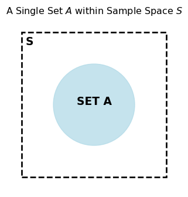
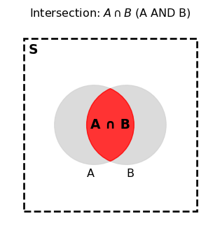

PSTAT 5A: Introduction to Probability
Lecture 4
Welcome to Lecture 4
Introduction to Probability
Understanding uncertainty through statistics
Today’s Learning Objectives
By the end of this lecture, you will be able to:
- Define probability and understand its basic properties
- Identify sample spaces and events
- Apply fundamental probability rules
- Calculate conditional probabilities
- Determine when events are independent
- Use Bayes’ theorem in simple applications
What is Probability?
üéØ Definition
Probability is a measure of the likelihood that an event will occur
Probability Range
Ranges from 0 to 1 (or 0% to 100%)
0: Event will never occur (impossible)
1: Event will certainly occur (certain)
0.5: Event has equal chance of occurring or not

Three Ways to Express Probability
- Fraction: \(\frac{1}{2}\), \(\frac{3}{4}\), \(\frac{2}{6}\)
- Decimal: 0.5, 0.75, 0.33
- Percentage: 50%, 75%, 33%
Example
When we roll a die, there are six possible outcomes:
1, 2, 3, 4, 5, 6.
The probability of any of them turning up is 1/6 or 16%.

Why Study Probability?
Probability helps us:
- Make decisions under uncertainty
- Understand random processes
- Analyze data and draw conclusions
- Model real-world phenomena
- Assess risk and likelihood
Applications: Weather forecasting, medical diagnosis, finance, quality control, gaming, insurance
Random Experiments
A random experiment is a process that:
- Can be repeated under similar conditions
- Has multiple possible outcomes
- The outcome cannot be predicted with certainty
Examples
ü™ô Flipping a coin
üé≤ Rolling a die
üÉè Drawing a card from a deck
üí° Measuring the lifetime of a light bulb
Sample Space
üéØ Definition
The sample space (denoted \(S\) or \(\Omega\)) is the set of all possible outcomes of a random experiment
Sample Space Examples
- Coin flip: \(S = \{H, T\}\)
- Two coin flips: \(S = \{HH, HT, TH, TT\}\)
- üé≤ Die roll: \(S = \{1, 2, 3, 4, 5, 6\}\)
- Two die rolls

- \(S = \{A\heartsuit,\ 2\heartsuit,\ \dots,\ K\heartsuit,\\ \phantom{S = \{}A\diamondsuit,\ 2\diamondsuit,\ \dots,\ K\diamondsuit,\\ \phantom{S = \{}A\clubsuit,\ 2\clubsuit,\ \dots,\ K\clubsuit,\\ \phantom{S = \{}A\spadesuit,\ 2\spadesuit,\ \dots,\ K\spadesuit\}\)

Types of Sample Spaces
Finite Sample Space
- Limited number of outcomes
- Example: Rolling a die

Infinite Sample Space
- Unlimited outcomes (countable or uncountable)
- Example: Measuring exact height of students

Events
üéØ Definition
An event is a subset of the sample space
Simple event: Contains exactly one outcome (Ex: \(A = \{3\}\) (rolling a 3))
Compound event: Contains multiple outcomes (Ex: \(B = \{2, 4, 6\}\) (rolling an even number))
Event Notation
For a die roll with \(S = \{1, 2, 3, 4, 5, 6\}\):
- \(A = \{1, 3, 5\}\) (rolling an odd number)
- \(B = \{4, 5, 6\}\) (rolling 4 or higher)
- \(C = \{6\}\) (rolling a six)
We can describe events in words or using set notation
Set Operations Overview
üéØ Definition
Key Concepts:
- Set: Collection of distinct objects
- Union: A OR B occurs
- Intersection: A AND B occurs
- Complement: A does NOT occur
- Sample Space: All possible outcomes
Key Concepts:
- Set: Collection of distinct objects
- Union: A OR B occurs
- Intersection: A AND B occurs
- Complement: A does NOT occur
- Sample Space: All possible outcomes
What is a Set?
Definition: A collection of things that share common characteristics. They can be elements, members, objects or similar terms.
Examples:
- Set of even numbers:
- {2, 4, 6, 8, …}
- Set of vowels: {a, e, i, o, u}

Union: A ∪ B
Definition: Contains all set elements, including intersections.
In Probability: The event that A OR B occurs (or both).
\[P(A \cup B) = P(A) + P(B) - P(A \cap B)\]

Intersection: A ∩ B
Definition: Area where two or more sets overlap.
In Probability: The event that A AND B occurs.
Properties:
Always smaller than or equal to individual sets
Can be empty (disjoint sets)

Absolute Complement: \(A^c\)
Definition: All elements that do not belong to the set.
In Probability: The event that A does NOT occur.
- \(P(A^c) = 1 - P(A)\)
Key Property: \(A \cup A^c = S\) (Sample Space)

Summary Table
| Operation | Symbol | Meaning | Probability |
|---|---|---|---|
| Union | \(A \cup B\) | Occurs if \(A\) or \(B\) | \(P(A \cup B) = P(A) + P(B) - P(A \cap B)\) |
| Intersection | \(A \cap B\) | Occurs if \(A\) and \(B\) | \(P(A \cap B)\) |
| Complement | \(A^c\) | Occurs if \(A\) does not occur | \(P(A^c) = 1 - P(A)\) |
Probability Axioms: Commutative
Commutative
\(A \cup B = B \cup A\)
\(A \cap B = B \cap A\)
Probability Axioms: Associative
Associative
\((A \cup B) \cup C = A \cup (B \cup C)\)
\((A \cap B) \cap C = A \cap (B \cap C)\)
Probability Axioms: Distributive
Distributive
\(A \cup (B \cap C) = (A \cup B) \cap (A \cup C)\)
\(A \cap (B \cup C) = (A \cap B) \cup (A \cap C)\)
Probability Axioms: De Morgan’s Laws
De Morgan’s Laws
\((A \cup B)^c = A^c \cap B^c\)
\((A \cap B)^c = A^c \cup B^c\)
Practice Examples
Example 1: In a class of students:
Set A = Students who like Math
Set B = Students who like Science
What does A ∪ B represent?
Solution. Students who like Math OR Science (or both)
Example 2: What does A ∩ B represent?
Solution. Students who like BOTH Math AND Science
Example 3: What does \(A^c\) represent?
Solution. Students who do NOT like Math
Example: Set Operations
For die roll \(S = \{1, 2, 3, 4, 5, 6\}\):
\(A = \{1, 3, 5\}\) (odd numbers)
\(B = \{4, 5, 6\}\) (4 or higher)

Find:
\(A \cup B\)
\(A \cap B\)
\(A^c\)
Solution.
\(A \cup B = \{1, 3, 4, 5, 6\}\)
\(A \cap B = \{5\}\)
\(A^c = \{2, 4, 6\}\)
Mutually Exclusive Events
Events \(A\) and \(B\) are mutually exclusive (or disjoint) if they cannot occur simultaneously
\[A \cap B = \emptyset\]

When rolling a die
\(A = \{1, 3, 5\}\) (odd)
\(B = \{2, 4, 6\}\) (even)
\(A\) and \(B\) are mutually exclusive
The Classical Definition of Probability
For equally likely outcomes:
\[P(A) = \frac{\text{Number of outcomes in } A}{\text{Total number of outcomes in } S}\]
Probability of rolling an even number on a fair die
\[P(\text{even}) = \frac{3}{6} = \frac{1}{2}\]
Properties of Probability
Non-negativity: \(P(A) \geq 0\) for any event \(A\)
Normalization: \(P(S) = 1\)
Additivity: If \(A\) and \(B\) are mutually exclusive, then \[P(A \cup B) = P(A) + P(B)\]
The Complement Rule
\[P(A^c) = 1 - P(A)\]
If the probability of rain is 0.3, what’s the probability of no rain?
\[P(\text{no rain}) = 1 - P(\text{rain}) = 1 - 0.3 = 0.7\]
Practice Problem 1
A standard deck has 52 cards. What is the probability of drawing:
- A heart?
- A face card (Jack, Queen, King)?
- The ace of spades?
Solution.
\(P(\text{heart}) = \frac{13}{52} = \frac{1}{4}\)
\(P(\text{face card}) = \frac{12}{52} = \frac{3}{13}\)
\(P(\text{ace of spades}) = \frac{1}{52}\)
The Addition Rule
For any two events \(A\) and \(B\):
\[P(A \cup B) = P(A) + P(B) - P(A \cap B)\]
Why subtract \(P(A \cap B)\)?
We don’t want to double-count outcomes that are in both events
Addition Rule Example
Drawing from a standard deck:
\(A\): Drawing a heart (\(P(A) = \frac{13}{52}\))
\(B\): Drawing a face card (\(P(B) = \frac{12}{52}\))
What’s \(P(A \cup B)\) (heart OR face card)?
\(P(A \cap B) = \frac{3}{52}\) (face cards that are hearts)
\(P(A \cup B) = \frac{13}{52} + \frac{12}{52} - \frac{3}{52} = \frac{22}{52} = \frac{11}{26}\)
Conditional Probability
üéØ Definition
Conditional probability is the probability of event \(A\) given that event \(B\) has occurred
\[P(A|B) = \frac{P(A \cap B)}{P(B)}\]
provided \(P(B) > 0\)
Conditional Probability Interpretation
\(P(A|B)\) means: - We know event \(B\) has occurred - What’s the probability that \(A\) also occurred? - We “restrict” our sample space to only outcomes in \(B\)
Conditional Probability Example
Drawing a card from a standard deck: - \(A\): Card is a heart - \(B\): Card is red
Find \(P(A|B)\)
\(P(A \cap B) = P(\text{heart}) = \frac{13}{52}\)
\(P(B) = P(\text{red}) = \frac{26}{52}\)
\(P(A|B) = \frac{13/52}{26/52} = \frac{13}{26} = \frac{1}{2}\)
Independence
üéØ Definition
Events \(A\) and \(B\) are independent if:
\[P(A|B) = P(A)\]
or equivalently:
\[P(A \cap B) = P(A) \times P(B)\]
Knowing that \(B\) occurred doesn’t change the probability of \(A\)
Independence Example
Two coin flips: - \(A\): First flip is heads - \(B\): Second flip is heads
Are \(A\) and \(B\) independent?
\(P(A) = \frac{1}{2}\), \(P(B) = \frac{1}{2}\)
\(P(A \cap B) = P(\text{HH}) = \frac{1}{4}\)
\(P(A) \times P(B) = \frac{1}{2} \times \frac{1}{2} = \frac{1}{4}\)
Yes, they are independent!
Multiplication Rule
General case: \(P(A \cap B) = P(A) \times P(B|A)\)
Independent events: \(P(A \cap B) = P(A) \times P(B)\)
Practice Problem 2
A jar contains 5 red balls and 3 blue balls. Two balls are drawn without replacement.
- What’s the probability both balls are red?
- What’s the probability the first is red and second is blue?
\(P(\text{both red}) = \frac{5}{8} \times \frac{4}{7} = \frac{20}{56} = \frac{5}{14}\)
\(P(\text{red then blue}) = \frac{5}{8} \times \frac{3}{7} = \frac{15}{56}\)
Law of Total Probability
If events \(B_1, B_2, \ldots, B_n\) form a partition of the sample space, then:
\[P(A) = P(A|B_1)P(B_1) + P(A|B_2)P(B_2) + \cdots + P(A|B_n)P(B_n)\]
Law of Total Probability Example
A factory has two machines: - Machine 1: Produces 60% of items, 5% defective - Machine 2: Produces 40% of items, 3% defective
What’s the overall probability an item is defective?
\(P(\text{defective}) = P(D|M_1)P(M_1) + P(D|M_2)P(M_2)\)
\(= 0.05 \times 0.6 + 0.03 \times 0.4 = 0.03 + 0.012 = 0.042\)
Bayes’ Theorem
üéØ Definition
\[P(A|B) = \frac{P(B|A) \times P(A)}{P(B)}\]
This allows us to “reverse” conditional probabilities
Named after Thomas Bayes (1701-1761)
Bayes’ Theorem Components
- \(P(A|B)\): Posterior probability - what we want to find
- \(P(B|A)\): Likelihood - given \(A\), probability of observing \(B\)
- \(P(A)\): Prior probability - initial probability of \(A\)
- \(P(B)\): Marginal probability - total probability of \(B\)
Bayes’ Theorem Example
Medical test for a disease: - Disease affects 1% of population - Test is 95% accurate for sick people - Test is 90% accurate for healthy people
If someone tests positive, what’s the probability they have the disease?
Bayes’ Theorem Solution
Let: - \(D\): Person has disease - \(T^+\): Test is positive
Given: - \(P(D) = 0.01\) - \(P(T^+|D) = 0.95\) - \(P(T^-|D^c) = 0.90\), so \(P(T^+|D^c) = 0.10\)
\(P(T^+) = P(T^+|D)P(D) + P(T^+|D^c)P(D^c)\) \(= 0.95 \times 0.01 + 0.10 \times 0.99 = 0.1085\)
Bayes’ Theorem Solution (cont.)
\[P(D|T^+) = \frac{P(T^+|D) \times P(D)}{P(T^+)} = \frac{0.95 \times 0.01}{0.1085} \approx 0.088\]
Surprising result: Even with a positive test, there’s only an 8.8% chance of having the disease!
This is due to the low base rate of the disease
Common Probability Mistakes
Confusing \(P(A|B)\) with \(P(B|A)\)
- Prosecutor’s fallacy
Assuming independence when events are dependent
Ignoring base rates (as in the medical test example)
Double counting in union calculations
Tree Diagrams
Tree diagrams help visualize sequential events and calculate probabilities
0.6 Red
0.7 ──┐
0.4 Blue
0.3 Red
0.3 ──┐
0.7 BlueExample: Drawing from different urns
Practice Problem 3
Two fair dice are rolled. Find:
- \(P(\text{sum} = 7)\)
- \(P(\text{sum} = 7 | \text{first die shows 3})\)
- Are these events independent?
6 ways out of 36: \(P(\text{sum} = 7) = \frac{6}{36} = \frac{1}{6}\)
Given first die is 3, need second die to be 4: \(P(\text{sum} = 7 | \text{first} = 3) = \frac{1}{6}\)
Yes, they’re independent since \(P(A|B) = P(A)\)
Counting and Probability
Sometimes we need to count outcomes:
Multiplication Principle: If task 1 can be done in \(m\) ways and task 2 in \(n\) ways, both can be done in \(m \times n\) ways
Permutations: Arrangements where order matters \[P(n,r) = \frac{n!}{(n-r)!}\]
Combinations: Selections where order doesn’t matter \[C(n,r) = \binom{n}{r} = \frac{n!}{r!(n-r)!}\]
Counting Example
How many ways can you arrange 5 people in a row?
This is a permutation: \(P(5,5) = 5! = 120\) ways
How many ways can you choose 3 people from 5 for a committee?
This is a combination: \(C(5,3) = \binom{5}{3} = \frac{5!}{3!2!} = 10\) ways
Probability with Counting
Example: A committee of 3 people is chosen from 8 people (5 women, 3 men). What’s the probability all 3 are women?
Total ways to choose 3 from 8: \(\binom{8}{3} = 56\)
Ways to choose 3 women from 5: \(\binom{5}{3} = 10\)
Probability: \(\frac{10}{56} = \frac{5}{28}\)
Probability Distributions Preview
A probability distribution assigns probabilities to all possible outcomes
For discrete random variables: - Probability mass function (PMF) - Cumulative distribution function (CDF)
We’ll explore this more in future lectures
Common Discrete Distributions
Uniform Distribution: All outcomes equally likely
Binomial Distribution: Number of successes in fixed trials
Geometric Distribution: Number of trials until first success
Examples and details coming in later lectures
Real-World Applications
Medical Diagnosis: Using Bayes’ theorem for test interpretation
Quality Control: Probability of defective items
Finance: Risk assessment and portfolio theory
Sports: Probability of wins, fantasy sports
Insurance: Calculating premiums based on risk
Key Formulas Summary
- Basic probability: \(P(A) = \frac{\text{favorable outcomes}}{\text{total outcomes}}\)
- Complement: \(P(A^c) = 1 - P(A)\)
- Addition: \(P(A \cup B) = P(A) + P(B) - P(A \cap B)\)
- Conditional: \(P(A|B) = \frac{P(A \cap B)}{P(B)}\)
- Independence: \(P(A \cap B) = P(A) \times P(B)\)
- Bayes’: \(P(A|B) = \frac{P(B|A) \times P(A)}{P(B)}\)
Problem-Solving Strategy
- Identify the sample space and events
- Determine if events are independent or mutually exclusive
- Choose the appropriate rule or formula
- Calculate step by step
- Check if your answer makes sense
Practice Problem 4
A bag contains 4 red, 3 blue, and 2 green marbles. Three marbles are drawn without replacement.
Find the probability that: a) All three are red b) No two are the same color c) At least one is blue
Practice Problem 4 Solutions
All red: \(\frac{4}{9} \times \frac{3}{8} \times \frac{2}{7} = \frac{24}{504} = \frac{1}{21}\)
Different colors: \(\frac{4 \times 3 \times 2}{9 \times 8 \times 7} \times 3! = \frac{24 \times 6}{504} = \frac{144}{504} = \frac{2}{7}\)
At least one blue: \(1 - P(\text{no blue}) = 1 - \frac{6 \times 5 \times 4}{9 \times 8 \times 7} = 1 - \frac{120}{504} = \frac{384}{504} = \frac{16}{21}\)
Common Student Questions
Q: “Why isn’t \(P(A \cup B) = P(A) + P(B)\) always?” A: We’d double-count outcomes in both events
Q: “How do I know if events are independent?” A: Check if \(P(A|B) = P(A)\) or if \(P(A \cap B) = P(A) \times P(B)\)
Q: “When do I use Bayes’ theorem?” A: When you want to “reverse” a conditional probability
Looking Ahead
Next lecture: Random Variables and Probability Distributions - Discrete vs. continuous random variables - Expected value and variance - Binomial and normal distributions
Final Thoughts
Probability is the foundation of statistics: - Helps us quantify uncertainty - Provides tools for making decisions with incomplete information - Essential for understanding statistical inference
Practice: The key to mastering probability is working through many problems!
Questions?
Office Hours: [Your office hours] Email: [Your email] Next Class: Random Variables and Distributions
Remember: Homework due [date]
Bonus: Probability Paradoxes
Monty Hall Problem: Should you switch doors?
Birthday Paradox: How many people needed for 50% chance of shared birthday?
Simpson’s Paradox: When aggregate data reverses subgroup trends
Explore these to deepen your probability intuition!